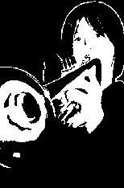
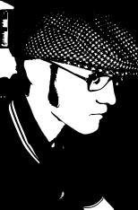
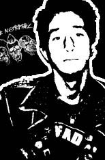

Devin Cress
Age as of 4/8/10: 16
Devin lives in Charlotte, NC. He spends most of his time being a do-it-yourselfer; fixing stuff around his house, welding, woodworking, go karting, riding bikes, and restoring classic cars and boats. He plans on moving back to his hometown of Lynchburg, VA and starting a restoration shop.
Devin started with this site in early 2009 and took over the site from Justin in early 2010. He listens to several generes of music, his favorite of which being ska. His favorite bands include The Mighty Mighty Bosstones, Mischief Brew, and Mustard Plug. Devin owns both a trumpet and trombone, although he rarely plays them.
Devin usually wears Dickies and a shirt of his own design. He frequently visits such sites as diygokarts.com and weldingtipsandtricks.com.
Email: devin@stencilpunks.org
Justin "Toxicated" Mayer
He is 23 years old and works in Philadelphia, PA as a screenprinter in a union shop. "Heads up" the art department at the business he works. Enjoys going to the beach, the movies, shows, and riding scooters. He engages in buddhist practices, but for personal practical purposes rather than religious. He eats a copious amount of meat but generally balances his diet out with bread and vegetables, exercise, and at least a single solid month of vegetarianism a year.
Justin founded Stencil Punks. Something of a former digital packrat, he saved almost anything he thinks he'll eventually use until he realizes that he wont and clears out alot of trash off his computer. The stencil collection he owned grew and grew until he decided to post them on a geocities page as backup. He posted it on livejournal a few times and it blew up.
Ironically, Justin doesn't listen to alot of 'teh punk rawk' music. He likes alot of genres: ska, punk, hardcore, indie, alt rock, soul, reggae, dub, etc... He was a "punk" for several years when he was younger, and then later a "skinhead" for about the same amount of time, eventually resisting any stereotype put upon him.
Justin used to maintain this website but handled over the goblet to Devin. He delicately juggles living with a high maintenance girlfriend, full time employment, social interaction between several circles of friends, a handful of social gatherings, and idealistic future plans. He likes playing soccer and supporting his teams:NYRB & Arsenal, riding bikes, being mr. fix-it in his aparment, cutting firewood, riding around town on his Stella scooter. He donates blood 6 times a year, ups the punks, has horrible grammer, and rarely capitalises words. He does not have a cell phone, a myspace, or a facebook and frequents a scooter message board. He lives in a rural area several miles outside of Philadelphia city limits.
RaTt-Tarded
Age as of 5/21/08 is 21
RaTt is resident of really no where, he tends to travel around, living in places, such as Lima, Oh; Cincinnati, Oh; Grand Rapids; Mi; and Orlando, Fl. Currently RaTt is residing on a small country ranch in the middle of "no where Ohio"
RaTt is an active guy, hanging out with friends, bands. As well as partying with any one he can find. He lives a pretty normal life, trying to find any time he can for shows his favorite past time. He is into the practices of Buddha, but has no religious stand.
RaTt isn't a hard guy to miss, the typical looking Punk Rocker, sporting his DIY cloths and looking like a gutter baby though he makes cloths he does it for a social statement, but also cause he just has fun and is comfortable in the cloths he wears. Witch is how he came across stencil punk. He started off making patches and shirts using printer paper stencils, walmart shop lifted paint, and a roller brush, as time when on he upgraded to a speed ball screen printing kit. One day he hopes to own his own Screen Printing Shop.
RaTt has seen a lot of different scenes and has been into punk rock since his early teens. Finding him self actively engaged in the punk scene in a number of ways, when he came across stencil punk using his knowledge of computer graphics; he decided that he wanted to help out STENCIL PUNKS; due to the fact some of the bands he liked where missing.
Other activities RaTt is involved in the scene would be his Orlando based Zine "Define Normal" witch can be accessed from myspace at myspace.com/definenormal. The zine is recognized by its 3 skulls by bands and fans alike. Keep an eye out for interviews with bands such as Agent Orange, Krum Bums, G.B.H., The Casualties, Wednesday Night Heroes, Gutter Mouth, Lower Class Brats, and MORE!
Get ready to see some more kick ass Stencils coming straight out of the RaTt Nest.
Catch RaTt at these convenient places
Myspace: myspace.com/suparatt
Email/MSN: super_rat_man@hotmail.com (please all stencil punk related comments or questions send to the admin email thank you)